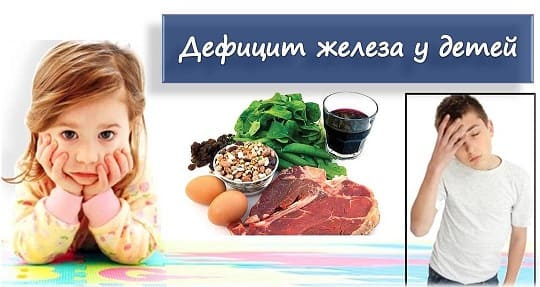
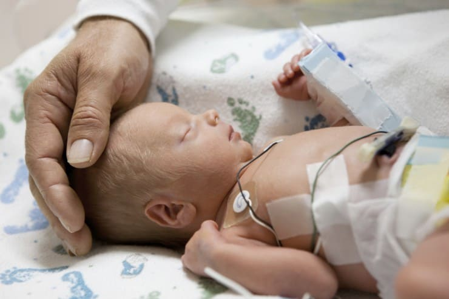
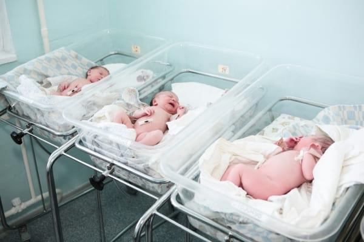
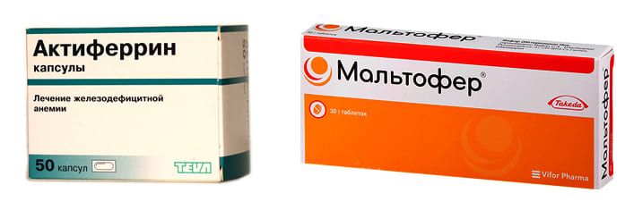
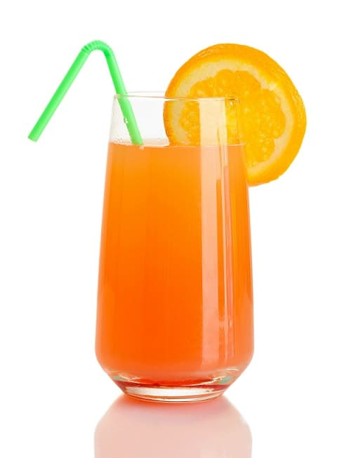

Дефицит железа в организме ребенка – чрезвычайно распространенная проблема. Всемирная организация здравоохранения (ВОЗ) относит всю территорию Российской Федерации к зоне, распространенность железодефицита на которой составляет 20–40 %.

Российские рекомендательные документы дают еще более печальные цифры, например Национальная программа оптимизации вскармливания детей первого года жизни РФ 2010 года указывает, что распространенность железо-дефицита у российских дошкольников достигает 60 %!
Вред от дефицита железа очень велик: железо необходимо для создания гемоглобина, который содержится в эритроцитах и переносит кислород во все ткани организма. При дефиците железа развивается дефицит кислорода, а это негативно сказывается абсолютно на всем: на росте, физическом и психическом развитии ребенка, интеллекте, иммунитете (родителям часто болеющих детей гораздо логичнее было бы озаботиться лечением железодефицита, а не поиском «самого хорошего» иммуномодулятора) и т. д.
ФАКТОРЫ РИСКА
Все начинается еще в утробе матери: львиная доля беременных женщин имеет железодефицитную анемию, а значит, в их организме железа едва хватает на собственное нормальное функционирование в условиях беременности. Природа рациональна – заботится сперва о матери и лишь остатки и избытки отдает ребенку (логика природы проста: мама ценнее ребенка, она может родить еще), и ребенок от анемичной мамы непременно недополучает железа и почти наверняка будет страдать анемией.

Таким образом, мы обозначили главный фактор риска развития анемии у ребенка – анемия мамы во время беременности. К другим факторам риска относятся: недоношенность (наиболее активно мать отдает железо плоду на последних неделях беременности),

многоплодная беременность (железо делится между двумя и более плодами),

вегетарианство родителей (отказ от мяса самой мамы во время беременности и, особенно, отказ от введения мясных продуктов в рацион ребенка),
нерациональное вскармливание (введение разбавленного коровьего или козьего молока детям первого года жизни вместо адаптированных смесей), маловесность при рождении, роды с помощью кесарева сечения, быстрый набор веса младенцем (более 1000 г в месяц) и др. Наличие одного или сразу нескольких факторов риска дефицита железа у ребенка – показание к активной профилактике.
И вот тут мы и подошли к самой сути проблемы. Вроде бы все педиатры знают, что железодефицитная анемия – зло. Но профилактикой ее почти никто не занимается. Нет, когда ребенок на грудном молоке или на адаптированных смесях, когда он получает адекватные прикормы, это уже профилактика, безусловно. Но что делать, если родители веганы (у меня немало таких семей)? Что делать, если они считают, что «смеси-это-же-сплошная-химия» и кормят двухмесячного разбавленным коровьим/козьим молоком или, прости господи, вареным толокном? Думаете, это сказки? А вот и нет, у меня и такие семьи приходят. Что делать, если ребенок недоношенный или из двойни? И, главное, что делать, если у одного ребенка сразу несколько таких факторов риска? Как быть тогда?
P. S. Напоминаю, что любое лекарство имеет побочные эффекты, и вы не должны применять его, не посоветовавшись с вашим врачом. Отравление и избыток железа – очень неприятная штука, сама по себе может потребовать лечения, поэтому без фанатизма, пожалуйста.
Вышеупомянутое российское Нацруководство тактично умалчивает об этом, а зря. В то же время международные руководства, например руководства ВОЗ, однозначно и недвусмысленно рекомендуют ВВОДИТЬ ПРОФИЛАКТИЧЕСКУЮ ДОЗУ ЖЕЛЕЗА РЕБЕНКУ, НЕ ДОЖИДАЯСЬ РАЗВИТИЯ РАЗВЕРНУТОЙ ЖЕЛЕЗОДЕФИЦИТНОЙ АНЕМИИ. Это и есть профилактика, в этом и состоит треть работы педиатра: выявить факторы риска, вмешаться заранее и не дать развиться болезни, а иначе зачем вообще к нему приходить ежемесячно со здоровым ребенком? Взвесить и измерить его и в супермаркете могут!
В реальности же, к огромному сожалению, почти никто из российских педиатров не назначает препараты железа до того, как упадет гемоглобин, да и потом назначают его слишком короткими курсами. Потому что вменяемых российских рекомендаций на эту тему нет, а ВОЗ, emedicine или uptodate никто не читает. Я иногда думаю, для кого вообще ВОЗ переводит на русский свои руководства. Если врач заинтересован в самообразовании, он и на английском его найдет и прочтет, а если нет, так и незачем все это. Но, видимо, они идеалисты.
Согласно последним рекомендациям ВОЗ, педиатр должен рекомендовать детям, имеющим один или более факторов риска железодефицита, принимать препарат железа с 6 месяцев до 2 лет жизни в профилактической дозе.
Напоминаю, что если врач назначил вашему ребенку препарат железа, помните о его побочных эффектах: прежде всего о том, что железо провоцирует запоры и красит зубы в черный цвет.
Чтобы снизить риск запоров, вводите препарат постепенно, не сразу 20 капель Мальтофера или Актиферрина, а 2 капли в день, потом 4, потом 6.

Смотрите на стул (он, кстати, почернеет, но это как раз не страшно) и другие симптомы. Если запоров не удалось избежать, обсудите это с врачом: он либо заменит препарат, либо назначит меньшую дозу на больший срок, либо добавит слабительное.

Чтобы зубы не красились, разводите препарат в соке и давайте его пить ребенку через трубочку – сразу за зубы и проглатывать, а также чистите зубки ребенку сразу после приема препарата.
Помните, что усвояемость солей железа (Актиферрин и др.) очень зависит от времени приема относительно пищи, и одновременный их прием с молоком резко замедляет их всасывание. Полимальтозные комплексы с железом (Мальтофер и др.) лишены этого недостатка, их можно принимать с любой пищей, они реже вызывают запоры, реже и меньше красят зубы, но и эффективность их заметно ниже, чем у солей. В каждом случае оптимальный препарат подбирается индивидуально.
Р. Р. S. Если ваш врач пытается лечить железодефицитную анемию только фолиевой кислотой, он грубо ошибается и вам следует получить второе мнение у другого врача. Все чаще сталкиваюсь с этой ошибкой. Фолиевая кислота играет вспомогательную роль в лечении анемии, главное в лечении и профилактике – восполнить дефицит железа.
(Сергей Бутрий "Здоровье ребенка: современный подход")